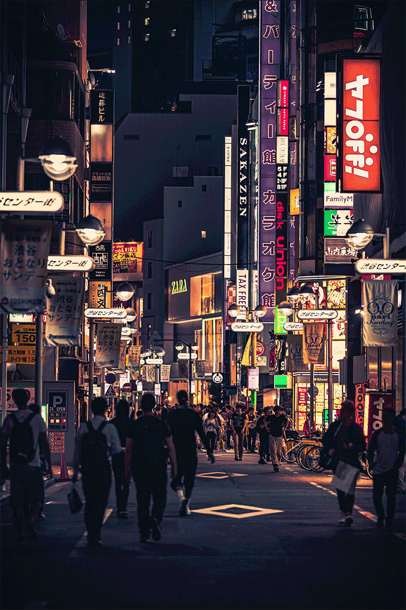
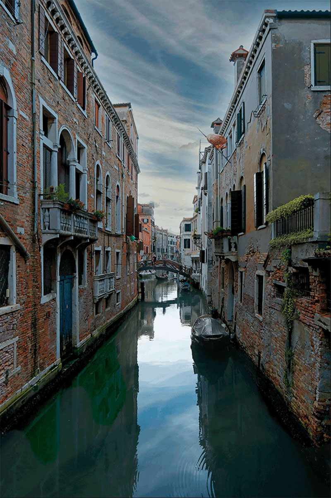
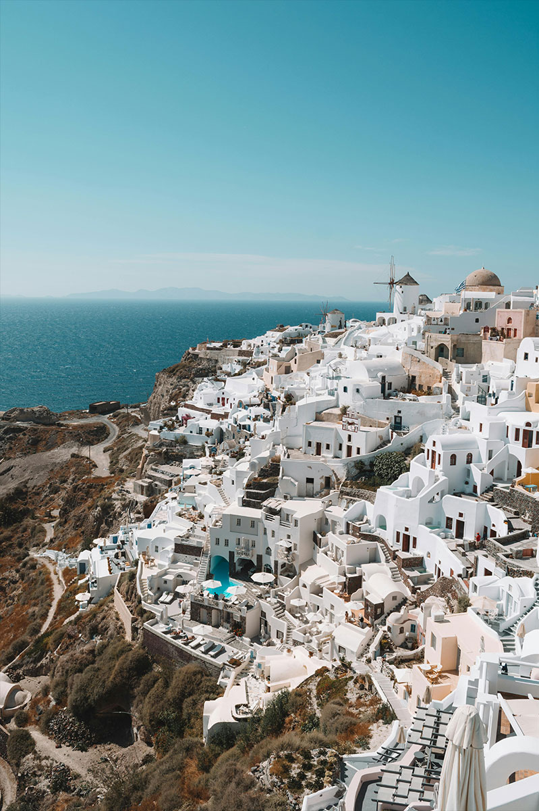

I’ve always had a desire for exploring new places and learning about different cultures, This article showcases three destinations that are amongst the top of my bucket list, Each one offering a unique blend of history, culture, and beauty that I am anticipating to experience firsthand. I hope you enjoy exploring these destinations as much as I’ve enjoyed dreaming about them!
Tokyo, Japan
Tokyo is a city that feels like two different worlds combined into one. You’ll see huge skyscrapers with bright neon lights right next to peaceful temples and quiet gardens. It’s always buzzing with energy, whether you’re crossing Shibuya’s crowded streets or eating fresh sushi at a tiny restaurant in a back alley. The culture is all about balance, and continues to honour traditions while also embracing modern life.
"I’ve always wanted to visit Tokyo because it feels like my childhood come to life. As a big Nintendo and Studio Ghibli fan, being able to see places like the Ghibli Museum or Nintendo Tokyo would be a dream come true. One of my favourite foods is gyoza, and I can only imagine how much better it tastes fresh in Japan. Ever since I was a kid, I’ve been obsessed with Japanese architecture, from the sleek modern skyscrapers to the beautiful temples, I would love to see it all in person."
- Marshall B.

Image: "People Walking on the Street Between Buildings" by Aleksandar Pasaric (Pexels).

Image: "Picturesque Venetian Canal with Historic Architecture" by Özgür KAYA (Pexels).
Venice, Italy
Venice feels like a city straight out of a storybook, with its canals taking the place of roads and boats instead of cars. The Grand Canal winds through the city, lined with beautiful old buildings that look like they belong in a painting. You can wander for hours through the narrow alleyways, discovering cafes, courtyards, and stunning architecture.
"As a kid, all that interested me were island resorts and beaches, but now I’ve come to appreciate different countries for their charm and rich history, that’s why Italy, and especially Venice, has become a must visit for me. Cruising through the Grand Canal on a boat, with the stunning architecture surrounding me, would be such a surreal feeling. I can’t wait to get lost wandering the city for hours, soaking in the unique atmosphere and stumbling upon amazing food spots."
- Marshall B.
Athens, Greece
Athens is a city that blends its ancient roots with modern life. The Acropolis is a main attraction, it towers over the city and acts as a constant reminder of Greece’s long and fascinating past. All white buildings and warm sunlight give the city a clean and luxurious feeling, and the nearby blue sea makes it feel like a dream vacation spot.
"Experiencing the Acropolis, and walking in the footsteps of gods and heroes excites me. I’ve always been fascinated by Greek mythology, and even named my childhood pet rabbit "Zeus". A friend of mine went to a wedding in Athens and came back raving about how beautiful and memorable it was. Hearing his stories, along with the city’s rich history and culture, has made Athens the final destination on my travel bucket list."
- Marshall B.

Image: "Santorini, Greece" by Alex Azabache (Pexels).